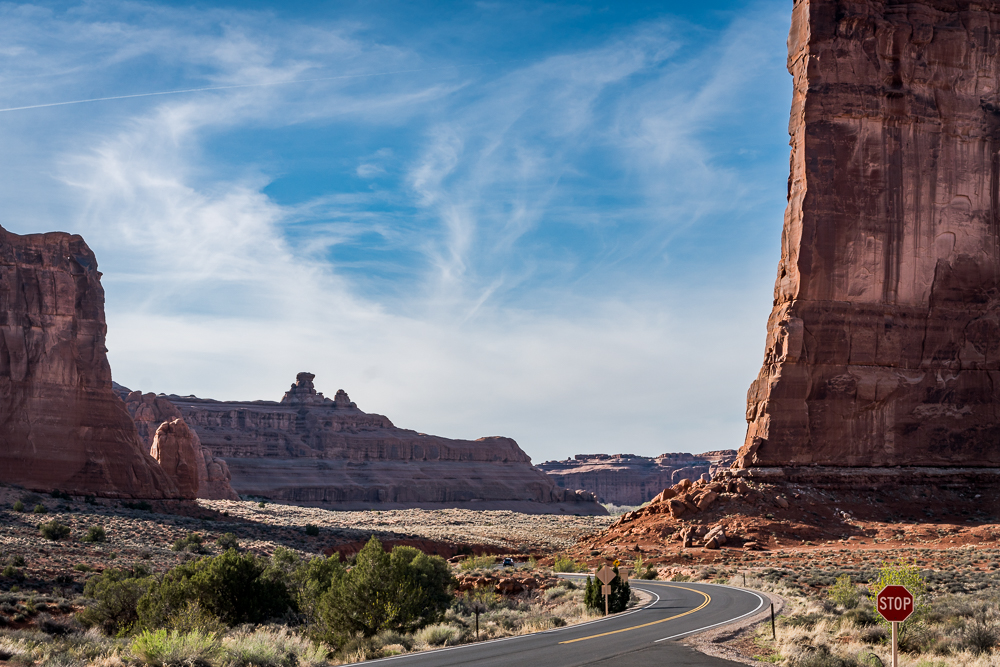

Grand Circle Tour
American Southwest
Spring break 2018, we went on an epic roadtrip that took us across the Mighty Five National Parks in Utah, Grand Canyon National Park in Arizona as wells as Monument Valley, Antelope Canyon, Horseshoe Bend, and Lake Powell.
Geographically all the five parks in Utah are not very far apart (technically you can cover in a day), but what struck us is that each park has its own unique and distinctive feature -
Sandstone Cliffs of Zion
Hoodoos of Bryce
Waterpocket fold of Capitol Reef
Of course Arches of Arches National Park
River Gorges of Canyon Lands
Endless canyons, cliffs, arches, bridges, hoodoos - millions of years in the making, made us wonder what planet we were on.
Las Vegas
We took a red eye flight from Charlotte and reached Las Vegas around noon. After resting at the Trump International Hotel we went around the strip in the evening.


Zion National Park
As it was peak season, we took the shuttle to see the park. The shuttle follows the Virgin River, which flows in the shadows of some the world’s tallest sandstone cliffs, creating a walled sanctuary adorned with hanging gardens and emerald pools.


Next morning we took the Emerald Pools Trail - an oasis in the middle of the desert. The hike is a collection of short trails that meander past a small lushly vegetated stream that rolls down from the cliffs and forms several interesting “pools” - Lower , Middle and Upper Emerald pools. We could walk behind a small waterfall at the top of the trail.


Next we drove to the Canyon Overlook Trail taking the scenic drive through the Zion - Mt Carmel tunnel. The tunnel is an architectural wonder and has seven windows providing light, fresh air and glimpses of fantastic scenery just outside.
Canyon Overlook Trail is must see. While the hike was not particularly strenuous, there were a few exposed spots that were scary. But the views looking into the main Canyon were spectacular!


On our way to Bryce Canyon , we came across a set of colorful sandstone hills with an unusual pattern of crosshatched cracks. A grid-like erosion process gives this formation its name - Checkerboard Mesa. This majestic hill towers some 900 feet above the road - its patterning is a result of process going on for millions of years.


Bryce National Park
Next up - Bryce Canyon National Park - a fantasyland of hoodoos, bizarre rock formations and sandstone pillars. But what exactly is a “Hoodoo”? No, not witchcraft. Hoodoo here refers to a tall thin spire of rock that protrudes from the bottom of an arid drainage basin. Bryce Canyon has thousands of Hoodoos - it is the largest display of Hoodoos in the world.
The main part of Bryce is shaped like an amphitheater and there are several viewpoints along the upper rim looking into the valley. We spent the day until sunset stopping by various viewpoints like Rainbow Point, Ponderasa Point, Suset Point, Sunrise Point, Inspiration Point , being wowed by orange and pink hoodoos and sandstone formations.
Rainbow Point


Ponderosa Point


Natural Bridge


Bryce Point


Sunset Point


Navajo Loop
Next morning we got up at the crack of dawn to catch the sunrise at Inspiration Point. After breakfast at the nearby lodge, we went to Sunset Point to hike down the Navajo Loop and Queen Garden Trails. This was truly one of the highlights of the trip as we got upclose with Hoodoos like Thor’s Hammer and walked through canyons, arches and forest of pine trees.


- 
-

-
-